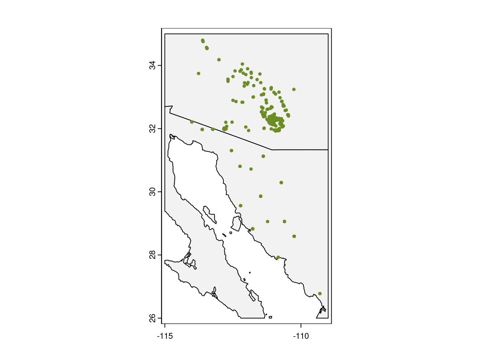
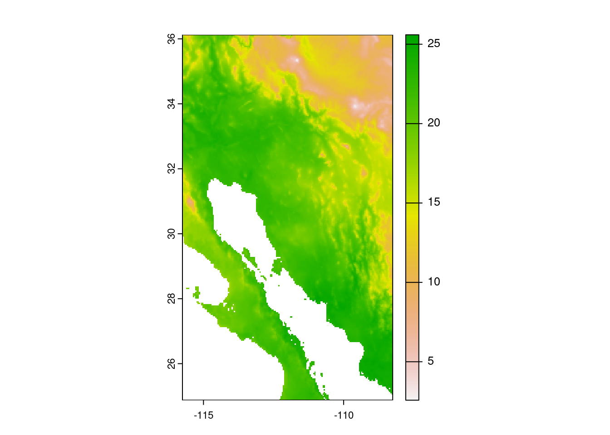
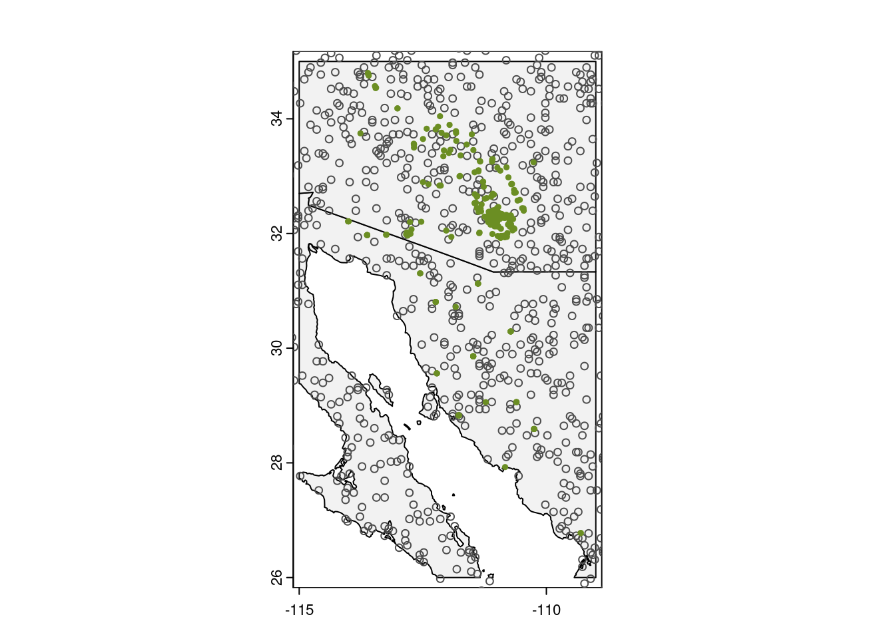
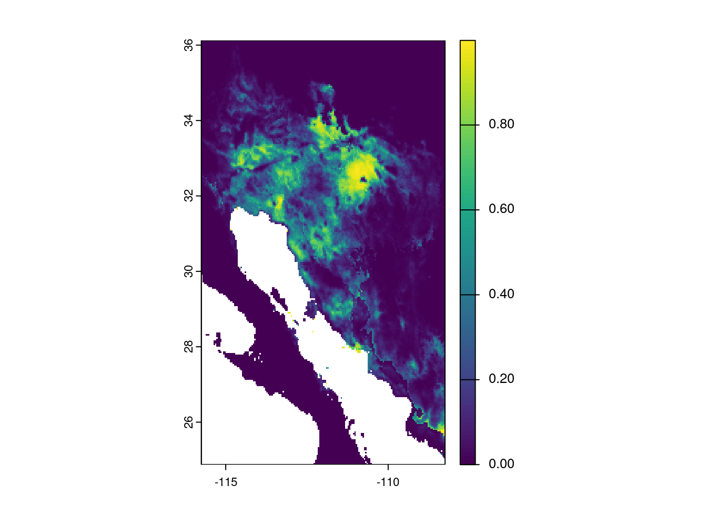
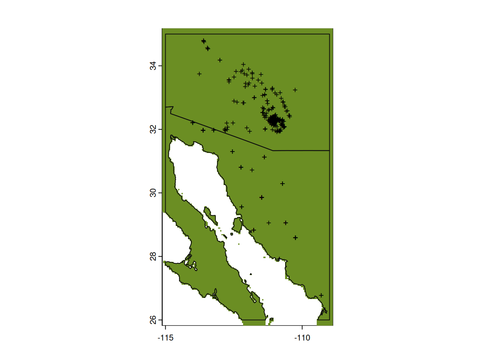
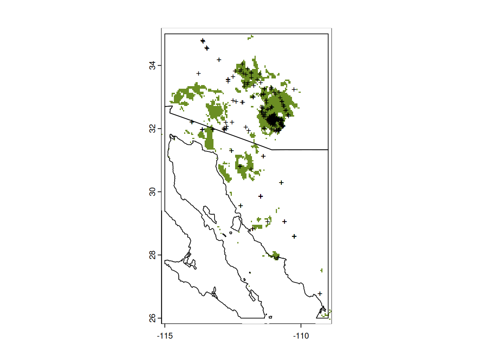
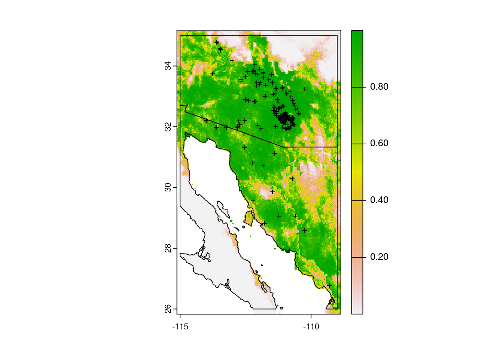
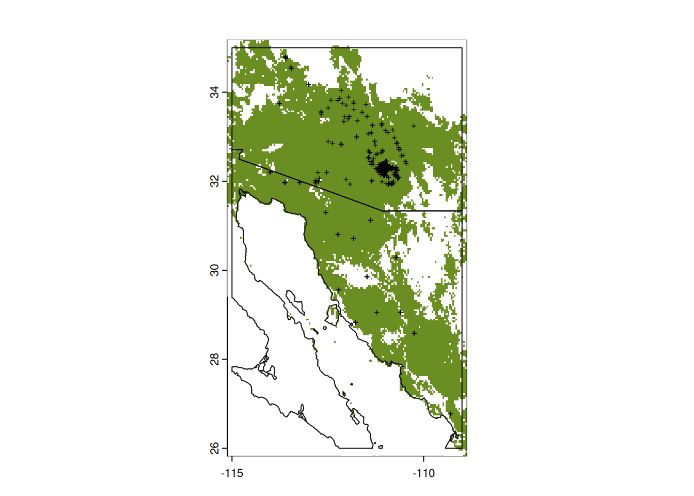

dir.create(path = "data")
dir.create(path = "output")A very brief introduction to species distribution models in R
Predicting suitable habitats of species from latitude and longitude coordinates has become increasingly easier with a suite of R packages. This introductory tutorial will show you how to turn your coordinate data into a range map.
Learning objectives
- Install packages for species distribution modeling
- Run species distribution models using a generalized linear model
- Visualize model predictions on a map
Species distribution modeling in becoming an increasingly important tool to understand how organisms might respond to current and future environmental changes. There is an ever-growing number of approaches and literature for species distribution models (SDMs), and you are encouraged to check out the Additional Resources section for a few of these resources. The materials in the terra package are especially useful, and Jeremy Yoder’s introduction is another great place to start. In this tutorial, we’ll use publicly available data to build, evaluate, and visualize a distribution model for the saguaro cactus.
Getting started
Before we do anything, we will need to make sure we have necessary software, set up our workspace, download example data, and install additional packages that are necessary to run the models and visualize their output.
Necessary software
The packages necessary for species distribution modeling will likely require additional, non-R software to work properly. Which software will depend on the operating system of your computer.
Linux
On Debian Linux systems, you will likely need to install the libgdal-dev package. You can do this through the terminal via sudo apt-get install libgdal-dev.
Windows
On Windows machines, you should probably install Rtools. You can find downloads and instructions at https://cran.r-project.org/bin/windows/Rtools/.
Mac OS
To use the terra package on Mac OS, you may need to install Xcode Command Line Tools package. You can do this through a terminal via xcode-select --install.
Workspace organization
First we need to setup our development environment. Open RStudio and create a new project via:
- File > New Project…
- Select ‘New Directory’
- For the Project Type select ‘New Project’
- For Directory name, call it something like “r-sdm” (without the quotes)
- For the subdirectory, select somewhere you will remember (like “My Documents” or “Desktop”)
We need to create two folders: ‘data’ will store the data we will be analyzing, and ‘output’ will store the results of our analyses. In the RStudio console:
It is good practice to keep input (i.e. the data) and output separate. Furthermore, any work that ends up in the output folder should be completely disposable. That is, the combination of data and the code we write should allow us (or anyone else, for that matter) to reproduce any output.
Example data
The data we are working with are observations of the saguaro, Carnegiea gigantea. We are using a subset of records available from GBIF, the Global Biodiversity Information Facility. You can download the data from https://tinyurl.com/saguaro-obs; save it in the ‘data’ folder that you created in the step above.
Install additional R packages
Next, there are three additional R packages that will need to be installed:
- terra
- geodata
- predicts
To install these, run:
install.packages("terra")
install.packages("geodata")
install.packages("predicts")Components of the model
The basic idea behind species distribution models is to take two sources of information to model the conditions in which a species is expected to occur. The two sources of information are:
- Occurrence data: these are usually latitude and longitude geographic coordinates where the species of interest has been observed. These are known as ‘presence’ data. Some models also make use of ‘absence’ data, which are geographic coordinates of locations where the species is known to not occur. Absence data are a bit harder to come by, but are required by some modeling approaches. For this lesson, we will use the occurrence data of the saguaro that you downloaded earlier.
- Environmental data: these are descriptors of the environment, and can include abiotic measurements of temperature and precipitation as well as biotic factors, such as the presence or absence of other species (like predators, competitors, or food sources). In this lesson we will focus on the 19 abiotic variables available from WorldClim. Rather than downloading the data from WorldClim, we’ll use functions from the geodata package to download these data (see below).
Data and quality control
We’ll start our script by loading those five libraries we need. And of course adding a little bit of information at the very top of our script that says what the script does and who is responsible!
# Species distribution modeling for saguaro
# Jeff Oliver
# jcoliver@email.arizona.edu
# 2023-08-08
library(terra)
library(geodata)
library(predicts)You might have seen some red messages print out to the screen. This is normal, and as long as none of the messages include “ERROR”, you can just hum right through those messages. If loading the libraries does result in an ERROR message, check to see that the libraries were installed properly.
Now that we have those packages loaded, we can download the bioclimatic variable data with the worldclim_global() function from the geodata package:
bioclim_data <- worldclim_global(var = "bio",
res = 2.5,
path = "data/")We are giving the worldclim_global() function three critical pieces of information:
var = "bio": This tellsworldclim_global()that we want to download all 19 of the bioclimatic variables, rather than individual temperature or precipitation measurements.res = 2.5: This is the resolution of the data we want to download; in this case, it is 2.5 minutes of a degree. For other resolutions, you can check the documentation by typing?worldclim_globalinto the console.path = "data/": Finally, this sets the location to which the files are downloaded. In our case, it is thedatafolder we created at the beginning.
Note also that after the files are downloaded to the data folder, they are read into memory and stored in the variable called bioclim_data.
Now the climate data are in memory, and next we need to load in the observations for the saguaro (these are the data we downloaded at the beginning of the lesson):
# Read in saguaro observations
obs_data <- read.csv(file = "data/Carnegiea-gigantea-GBIF.csv")
# Check the data to make sure it loaded correctly
summary(obs_data) gbifid latitude longitude
Min. :2.021e+08 Min. :26.78 Min. :-114.0
1st Qu.:1.453e+09 1st Qu.:32.17 1st Qu.:-111.4
Median :1.571e+09 Median :32.28 Median :-111.1
Mean :1.567e+09 Mean :32.16 Mean :-111.3
3rd Qu.:1.677e+09 3rd Qu.:32.38 3rd Qu.:-111.0
Max. :1.806e+09 Max. :34.80 Max. :-109.3
NA's :3 NA's :3 Notice that there are three NA values in the latitude and longitude columns. Those records will not be of any use to us, so we can remove them from our data frame:
# Notice NAs - drop them before proceeding
obs_data <- obs_data[!is.na(obs_data$latitude), ]
# Make sure those NA's went away
summary(obs_data) gbifid latitude longitude
Min. :8.910e+08 Min. :26.78 Min. :-114.0
1st Qu.:1.453e+09 1st Qu.:32.17 1st Qu.:-111.4
Median :1.571e+09 Median :32.28 Median :-111.1
Mean :1.575e+09 Mean :32.16 Mean :-111.3
3rd Qu.:1.677e+09 3rd Qu.:32.38 3rd Qu.:-111.0
Max. :1.806e+09 Max. :34.80 Max. :-109.3 When we look at the obs_data data frame now there are no NA values, so we are ready to proceed.
To make species distribution modeling more streamlined, it is useful to have an idea of how widely our species is geographically distributed. We are going to find general latitudinal and longitudinal boundaries and store this information for later use. We use the ceiling() and floor() to round up and down, respectively, to the nearest integer:
# Determine geographic extent of our data
max_lat <- ceiling(max(obs_data$latitude))
min_lat <- floor(min(obs_data$latitude))
max_lon <- ceiling(max(obs_data$longitude))
min_lon <- floor(min(obs_data$longitude))
# Store boundaries in a single extent object
geographic_extent <- ext(x = c(min_lon, max_lon, min_lat, max_lat))Before we do any modeling, it is also a good idea to run a reality check on your occurrence data by plotting the points on a map.
# Download data with geodata's world function to use for our base map
world_map <- world(resolution = 3,
path = "data/")
# Crop the map to our area of interest
my_map <- crop(x = world_map, y = geographic_extent)
# Plot the base map
plot(my_map,
axes = TRUE,
col = "grey95")
# Add the points for individual observations
points(x = obs_data$longitude,
y = obs_data$latitude,
col = "olivedrab",
pch = 20,
cex = 0.75)
Looking good!
Preparing data for modeling
Now that our occurrence data look OK, we can use the bioclimatic variables to create a model. The first thing we want to do though is limit our consideration to a reasonable geographic area. That is, for our purposes we are not looking to model saguaro habitat suitability globally, but rather to the general southwest region of North America. We start by building an Extent object that is just a little larger than the extent of our saguaro observations. We then crop the bioclimatic data to that larger, sampling extent. As a reality check we finish by plotting the cropped version of first bioclimatic variable.
# Make an extent that is 25% larger
sample_extent <- geographic_extent * 1.25
# Crop bioclim data to desired extent
bioclim_data <- crop(x = bioclim_data, y = sample_extent)
# Plot the first of the bioclim variables to check on cropping
plot(bioclim_data[[1]])
The plot shows the first bioclimatic varable (annual mean temperature in degrees Celsius).
In order to evaluate species distribution models, and really understand the factors influencing where saguaros occur, we need to include some absence points, those sites where saguaros are known to not occur. The problem is, we only have presence data for saguaros.
The pseudo-absence point
One common work around for coercing presence-only data for use with presence/absence approaches is to use pseudo-absence, or “background” points. While “pseudo-absence” sounds fancy, it really just means that one randomly samples points from a given geographic area and treats them like locations where the species of interest is absent. A great resource investigating the influence and best practices of pseudo-absence points is a study by Barbet-Massin et al. (2012) (see Additional Resources below for full details).
For our purposes, we are going to create a set of 1000 background (aka pseudo-absence) points at random, and add these to our data. We are going to use the bioclim data for determining spatial resolution of the points, and restrict the sampling area to the general region of the observations of saguaros.
# Set the seed for the random-number generator to ensure results are similar
set.seed(20210707)
# Randomly sample points (same number as our observed points)
background <- spatSample(x = bioclim_data,
size = 1000, # generate 1,000 pseudo-absence points
values = FALSE, # don't need values
na.rm = TRUE, # don't sample from ocean
xy = TRUE) # just need coordinates
# Look at first few rows of background
head(background) x y
[1,] -109.1875 34.89583
[2,] -114.0208 27.56250
[3,] -114.8958 33.43750
[4,] -108.8958 25.52083
[5,] -111.7292 30.35417
[6,] -111.3125 32.72917We can also plot those points, to see how the random sampling looks.
# Plot the base map
plot(my_map,
axes = TRUE,
col = "grey95")
# Add the background points
points(background,
col = "grey30",
pch = 1,
cex = 0.75)
# Add the points for individual observations
points(x = obs_data$longitude,
y = obs_data$latitude,
col = "olivedrab",
pch = 20,
cex = 0.75)
We have observation data and pseudo-absence data and we need to first put them into one data structure, then add in the climate data so we have a single data frame with presence points and pseudo-absence points, and climate data for each of these points. It sounds like a lot, but after putting the two coordinate datasets (observations and pseudo-absence points) together, the terra package makes it easy to extract climate data. When we put the observations and pseudo-absence points in the data frame, we need to make sure we know which is which - that is, we need a column to indicate whether a pair of latitude/longitude coordinates indicates a presence point or a (pseudo) absence point. So we start by preparing the two datasets:
# Pull out coordinate columns, x (longitude) first, then y (latitude) from
# saguaro data
presence <- obs_data[, c("longitude", "latitude")]
# Add column indicating presence
presence$pa <- 1
# Convert background data to a data frame
absence <- as.data.frame(background)
# Update column names so they match presence points
colnames(absence) <- c("longitude", "latitude")
# Add column indicating absence
absence$pa <- 0
# Join data into single data frame
all_points <- rbind(presence, absence)
# Reality check on data
head(all_points) longitude latitude pa
1 -110.8980 32.33556 1
2 -110.9028 32.28267 1
3 -110.7213 30.29105 1
4 -110.6837 32.05413 1
5 -110.7169 32.25111 1
6 -111.0198 32.19404 1Adding climate data
We are now ready to add climate data to the coordinate data sets. As mentioned above, the terra package helps with this. We will use the extract() function, which takes geographic coordinates and raster data as input, and pulls out values in the raster data for each of the geographic coordinates.
bioclim_extract <- extract(x = bioclim_data,
y = all_points[, c("longitude", "latitude")],
ID = FALSE) # No need for an ID columnThe process of extracting data results in a data frame with the climate data, but that data frame doesn’t have the coordinate information and, more importantly, doesn’t indicate which rows are presence points and which rows are pseudo-absence points. So we need to join these extracted data back with our all_points data frame. After we do this, we do not need the latitude and longitude coordinates anymore, so we can drop those two columns (at least for building the model).
# Add the point and climate datasets together
points_climate <- cbind(all_points, bioclim_extract)
# Identify columns that are latitude & longitude
drop_cols <- which(colnames(points_climate) %in% c("longitude", "latitude"))
drop_cols # print the values as a reality check[1] 1 2# Remove the geographic coordinates from the data frame
points_climate <- points_climate[, -drop_cols]Training and testing data
Now that we have climate data for our presence and pseudo-absence points, we need to take one more step. We are going to build our model using only part of our data, and use the “set aside” data to evaluate model performance afterward. This is known as separating our data into a training set (the data used to build the model) and a testing set (the data used to evaluate the model). We are going to reserve 20% of the data for testing, so we use the folds() function from the predicts package to evenly assign each point to a random group. To make sure we have roughly representative sample of both presence and pseudo-absence points, we use the pa column to tell R that our data has these two sub-groups.
# Create vector indicating fold
fold <- folds(x = points_climate,
k = 5,
by = points_climate$pa)We now can use the fold vector to split data into a training set and a testing set. Values in the fold vector are the integers 1, 2, 3, 4, and 5, each evenly sampled; we can see this with the table() function, which counts how many times each of the fold values occurs:
table(fold)fold
1 2 3 4 5
280 280 280 280 280 We will say that any observations in fold 1 will be testing data, and any observations in the other folds (2, 3, 4, 5) will be training data. Note that we did not add a column for fold identity in the points_climate data frame, but we can still use the information in the fold vector to separate training data from testing data.
testing <- points_climate[fold == 1, ]
training <- points_climate[fold != 1, ]Model building
Now that the data are ready, it is (finally!) time to build our species distribution model! For this model, we will use the generalized linear model - it’s not the best and it’s not the worst, but it will work for us. If you want more information comparing different approaches, see references in the Additional Resources section below, especially the work of Valavi et al. 2021.
# Build a model using training data
glm_model <- glm(pa ~ ., data = training, family = binomial())OK, there’s some odd syntax in that glm() code that warrants some explanation, especially that pa ~ .. Here is the breakdown of the three pieces of information passed to glm():
pa ~ .: This is the formula we are analyzing, that is we are asking R to predict the value in thepacolumn based on values in all the remaining columns. That is, instead of listing the names of all the bioclimatic variables (pa ~ bio1 + bio2 + bio3...), we can use the dot (.) to mean “all the columns except the column to the left of the tilda (~).”data = training: This tells R to use only the data stored in thetrainingdata frame to build the model.family = binomial(): Because the response variable,pa, only takes values of 0 or 1, we need to indicate this to R.
Now that we have built our model, we can use it to predict the habitat suitability across the entire map. We do this with the predict() function, passing the data to feed into the model (bioclim_data), the stored model itself (glm_model), and finally what values we want as output (type = "response"). This last argument (type = "response") will return the predicted probabilities from our model. After calculating the predicted values, we can print them out with the plot() command.
# Get predicted values from the model
glm_predict <- predict(bioclim_data, glm_model, type = "response")
# Print predicted values
plot(glm_predict)
OK, it is a map, but what does it mean? This plot shows the probability of occurrence of saguaros across the map. Note the values are all below 1.0.
We now take that model, and evaluate it using the observation data and the pseudo-absence points we reserved for model testing. We then use this test to establish a cutoff of occurrence probability to determine the boundaries of the saguaro range.
# Use testing data for model evaluation
glm_eval <- pa_evaluate(p = testing[testing$pa == 1, ],
a = testing[testing$pa == 0, ],
model = glm_model,
type = "response")Here is another spot that warrants some additional explanation. We pass three pieces of information to the pa_evaluate() function:
p = testing[testing$pa == 1, ]: In this case,pstands for presence data, so we pass all the rows in the testing data that correspond to a location where there was a saguaro present (that is, the value in thepacolumn is equal to 1).a = testing[testing$pa == 0, ]: Similarly,astands for absence data, so we pass all the pseudo-absence rows in our dataset (i.e. all rows where the value in thepacolumn is equal to 0).model = glm_model: This is the model object we are evaluating. One way to think about this is that theglm_modelis a calculator that takes bioclimatic data as input and provides probabilities as output.
With the pa_evaluate() function, we pass data that we “know” what the right answer should be for these probability calculations. That is, the glm_model should predict values close to 1 for those rows that we pass to the p argument (because we know that saguaros occur at those locations) and it should predict values close to 0 for those rows that we pass to the a argument. We use this information on model performance to determine the probability value to use as a cutoff to saying whether a particular location is suitable or unsuitable for saguaros.
# Determine minimum threshold for "presence"
glm_threshold <- glm_eval@thresholds$max_spec_sensThe thresholds element of glm_eval offers a number of means of determining the threshold cutoff. Here we chose max_spec_sens, which sets “the threshold at which the sum of the sensitivity (true positive rate) and specificity (true negative rate) is highest.” For more information, check out the documentation for the pa_evaluate() function (?pa_evaluate, remember?).
And finally, we can use that threshold to paint a map with sites predicted to be suitable for the saguaro!
# Plot base map
plot(my_map,
axes = TRUE,
col = "grey95")
# Only plot areas where probability of occurrence is greater than the threshold
plot(glm_predict > glm_threshold,
add = TRUE,
legend = FALSE,
col = "olivedrab")
# And add those observations
points(x = obs_data$longitude,
y = obs_data$latitude,
col = "black",
pch = "+",
cex = 0.75)
# Redraw those country borders
plot(my_map, add = TRUE, border = "grey5")
Hmmm…that doesn’t look right. It plotted a large portion of the map green. Let’s look at what we actually asked R to plot, that is, we plot the value of predict_presence > bc_threshold. So what is that?
glm_predict > glm_thresholdclass : SpatRaster
dimensions : 270, 180, 1 (nrow, ncol, nlyr)
resolution : 0.04166667, 0.04166667 (x, y)
extent : -115.75, -108.25, 24.875, 36.125 (xmin, xmax, ymin, ymax)
coord. ref. : lon/lat WGS 84 (EPSG:4326)
source(s) : memory
name : lyr1
min value : FALSE
max value : TRUE The comparison of these two rasters produces another raster with values of only FALSE or TRUE: FALSE when the value in a grid cell of glm_predict is less than or equal to the value in glm_threshold and TRUE for cells with a value greater than glm_threshold. Since there are two values in this comparison (FALSE and TRUE), we need to update what we pass to the col parameter in our second call to the plot() function. Instead of just passing a single value, we provide a color for 0 (NA) and a color for 1 ("olivedrab"):
# Plot base map
plot(my_map,
axes = TRUE,
col = "grey95")
# Only plot areas where probability of occurrence is greater than the threshold
plot(glm_predict > glm_threshold,
add = TRUE,
legend = FALSE,
col = c(NA, "olivedrab")) # <-- Update the values HERE
# And add those observations
points(x = obs_data$longitude,
y = obs_data$latitude,
col = "black",
pch = "+",
cex = 0.75)
# Redraw those country borders
plot(my_map, add = TRUE, border = "grey5")
A final note on our approach: the map we have drawn presents a categorical classification of whether a particular point on the landscape will be suitable or not for the species of interest. This classification relies quite heavily on the value of the threshold (see glm_threshold and the documentation for pa_evaluate()) and the pseudo-absence points. Given that we used random sampling to generate those pseudo-absence points, there is potential for variation in the predicted range if you run this code more than once (try it! if you re-run the code from the point of creating the pseudo-absence points, you are almost guaranteed a different map.). There are a number of approaches to dealing with this variation, and the paper by Barbet-Massin et al. (2012) is a great resource. I’ll leave it as homework for you to determine which approach is most appropriate here!
Our final script, generating the model, determining the threshold, and visualizing the results:
# Species distribution modeling for saguaro
# Jeff Oliver
# jcoliver@email.arizona.edu
# 2023-08-08
# Load required libraries
library(terra)
library(geodata)
library(predicts)
# Download data for the bioclimatic variables
bioclim_data <- worldclim_global(var = "bio",
res = 2.5,
path = "data/")
# Read in saguaro observations
obs_data <- read.csv(file = "data/Carnegiea-gigantea-GBIF.csv")
# Check the data to make sure it loaded correctly
summary(obs_data)
# Notice NAs - drop them before proceeding
obs_data <- obs_data[!is.na(obs_data$latitude), ]
# Make sure those NA's went away
summary(obs_data)
# Determine geographic extent of our data
max_lat <- ceiling(max(obs_data$latitude))
min_lat <- floor(min(obs_data$latitude))
max_lon <- ceiling(max(obs_data$longitude))
min_lon <- floor(min(obs_data$longitude))
geographic_extent <- ext(x = c(min_lon, max_lon, min_lat, max_lat))
# Make an extent that is 25% larger for sampling
sample_extent <- geographic_extent * 1.25
# Crop bioclim data to desired extent
bioclim_data <- terra::crop(x = bioclim_data, y = sample_extent)
# Set the seed for the random-number generator to ensure results are similar
set.seed(20210707)
# Randomly sample points (same number as our observed points)
background <- spatSample(x = bioclim_data,
size = 1000,
values = FALSE, # don't need values
na.rm = TRUE, # don't sample from ocean
xy = TRUE) # just need coordinates
# Pull out coordinate columns, x (longitude) first, then y (latitude) from
# saguaro data
presence <- obs_data[, c("longitude", "latitude")]
# Add column indicating presence
presence$pa <- 1
# Convert background data to a data frame
absence <- as.data.frame(background)
# Update column names so they match presence points
colnames(absence) <- c("longitude", "latitude")
# Add column indicating absence
absence$pa <- 0
# Join data into single data frame
all_points <- rbind(presence, absence)
# Extract climate data for all those points
bioclim_extract <- extract(x = bioclim_data,
y = all_points[, c("longitude", "latitude")],
ID = FALSE) # No need for an ID column
# Add the point and climate datasets together
points_climate <- cbind(all_points, bioclim_extract)
# Identify columns that are latitude & longitude
drop_cols <- which(colnames(points_climate) %in% c("longitude", "latitude"))
drop_cols # print the values as a reality check
# Remove the geographic coordinates from the data frame
points_climate <- points_climate[, -drop_cols]
# Create vector indicating fold to separate training and testing data
fold <- folds(x = points_climate,
k = 5,
by = points_climate$pa)
# Separate data into training and testing sets
testing <- points_climate[fold == 1, ]
training <- points_climate[fold != 1, ]
# Build a model using training data
glm_model <- glm(pa~., data = training, family = binomial())
# Get predicted values from the model
glm_predict <- predict(bioclim_data, glm_model, type = "response")
# Use testing data for model evaluation
glm_eval <- pa_evaluate(p = testing[testing$pa == 1, ],
a = testing[testing$pa == 0, ],
model = glm_model,
type = "response")
# Determine minimum threshold for "presence"
glm_threshold <- glm_eval@thresholds$max_spec_sens
# Plot the results
# Plot base map
plot(my_map,
axes = TRUE,
col = "grey95")
# Only plot areas where probability of occurrence is greater than the threshold
plot(glm_predict > glm_threshold,
add = TRUE,
legend = FALSE,
col = c(NA, "olivedrab")) # only color for second element ("present")
# And add those observations
points(x = obs_data$longitude,
y = obs_data$latitude,
col = "black",
pch = "+",
cex = 0.75)
# Redraw those country borders
plot(my_map, add = TRUE, border = "grey5")Advanced: Forecasting distributions
Now that you have a species distribution model, you can make predictions about the distribution under different climate scenarios. Let us pause for a moment and be very clear about this approach. With all kinds of math wizardry on our side, we are attempting to predict the future. Which means any predictions we make should be interpreted with extreme caution. If you are going to go about an approach such as this, it would be wise to run a variety of different models and a variety of different climate scenarios. There are links to such resources in the Additional Resources section, below.
Forecast climate data
We will need to download climate data for the time period of interest. For the purposes of this lesson, we will look a climate projections for the years 2061- 2080. Note there are several different forecast climate models and you can read about the different models at McSweeney et al. 2015 and on the CMIP6 page.
We can download data for one model, using the cmip6_world() function from the geodata package. The syntax is very similar to the syntax we used for the worldclim_global() function above. We are using one climate model and you can see which models are available by looking at the documentation for worldclim_global() (again, this can be done via ?cmip6_world in the console). This is a pretty large file (~440 MB), so it might take a minute or two to download.
# Download predicted climate data
forecast_data <- cmip6_world(model = "MPI-ESM1-2-HR",
ssp = "245",
time = "2061-2080",
var = "bioc",
res = 2.5,
path = "data")In order to use these predicted climate data with the model that we built above, we need to be sure that the names of the data are identical (R is quite pedantic about this). You can print out the names of each of the layers in the datasets with the names() function (e.g. names(bioclim_data) and names(forecast_data)) and see that they differ. Because our model was built using the names in the bioclim_data, we will update the names in the forecast data:
# Use names from bioclim_data
names(forecast_data) <- names(bioclim_data)Just like we did with our contemporary climate data, we can crop our forecast climate data to the geographic extent of interest. Here we use that sampling extent object to reduce the area of the forecast climate data to a little beyond the current distribution of the Saguaro.
# Crop forecast data to desired extent
forecast_data <- crop(x = forecast_data, y = sample_extent)Get out the crystal ball
Now that we have the forecast data, we can apply the model we build above, bc_model, to the forecast climate data:
# Predict presence from model with forecast data
forecast_presence <- predict(forecast_data, glm_model, type = "response")If you want to look at the predicted probabilities of occurrence, you can modify the code we used above.
# Plot base map
plot(my_map,
axes = TRUE,
col = "grey95")
# Add model probabilities
plot(forecast_presence, add = TRUE)
# Redraw those country borders
plot(my_map, add = TRUE, border = "grey5")
# Add original observations
points(x = obs_data$longitude,
y = obs_data$latitude,
col = "black",
pch = "+",
cex = 0.75)
We can also map our predictions for presence / absence, using the same threshold that we did for predictions based on current climate data.
# Plot base map
plot(my_map,
axes = TRUE,
col = "grey95")
# Only plot areas where probability of occurrence is greater than the threshold
plot(forecast_presence > glm_threshold,
add = TRUE,
legend = FALSE,
col = c(NA, "olivedrab"))
# And add those observations
points(x = obs_data$longitude,
y = obs_data$latitude,
col = "black",
pch = "+",
cex = 0.6)
# Redraw those country borders
plot(my_map, add = TRUE, border = "grey5")
Wow, things look great for saguaros under this climate forecast. Try downloading other climate models to see how predictions differ. And remember to interpret these results cautiously.
Additional resources
- The creators of the terra package have an excellent, in-depth guide to species distribution modeling in R
- A lighter-weight introduction to species distribution models in R
- A really nice comparison among different SDM methods
- Fast and flexible Bayesian species distribution modelling using Gaussian processes
- Run a range of species distribution models
- SDM polygons on a Google map
- R package ‘maxnet’ for functionality of Java maxent package
- A study on the effect of pseudo-absences in SDMs (Barbet-Massin et al. 2012)
- A PDF version of this lesson